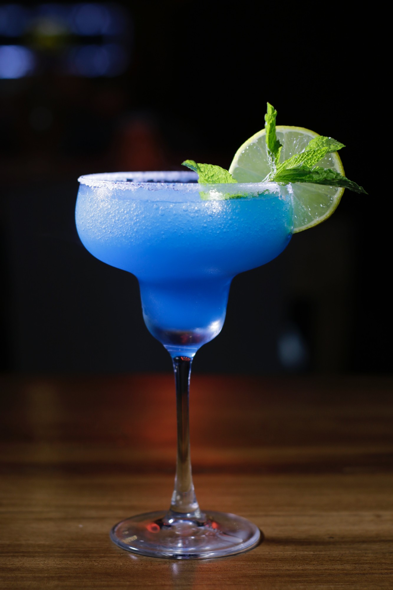
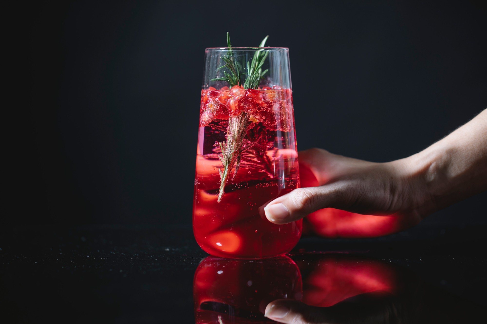
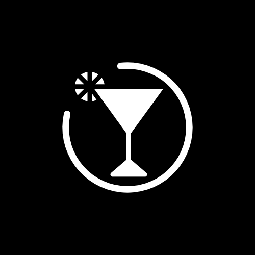

Blue Margarita
Tequila, curaçao bleu et citron vert, sur un givrage au sel.
Voir la recette

Recettes, bars et secrets de mixologie pour des soirées qui pétillent.
Découvrir
Tequila, curaçao bleu et citron vert, sur un givrage au sel.
Voir la recetteVodka, curaçao et limonade : le grand bleu dans un verre.
Voir la recetteRhum blanc, menthe fraîche et une touche de curaçao.
Voir la recetteSirop de curaçao sans alcool, citron vert et eau pétillante.
Voir la recetteCousine électrique de la margarita classique, la Blue Margarita troque le triple sec contre le curaçao bleu. Le résultat : un cocktail d'un bleu profond, frais et légèrement amer, qui garde tout le caractère de la tequila.
Servie frappée dans un verre à margarita givré au sel, elle se pare d'une rondelle de citron vert et de quelques feuilles de menthe pour une touche végétale.
Facile à réaliser, elle ne demande qu'un shaker, des glaçons et une bonne dose de bonne humeur.
Voir la recette